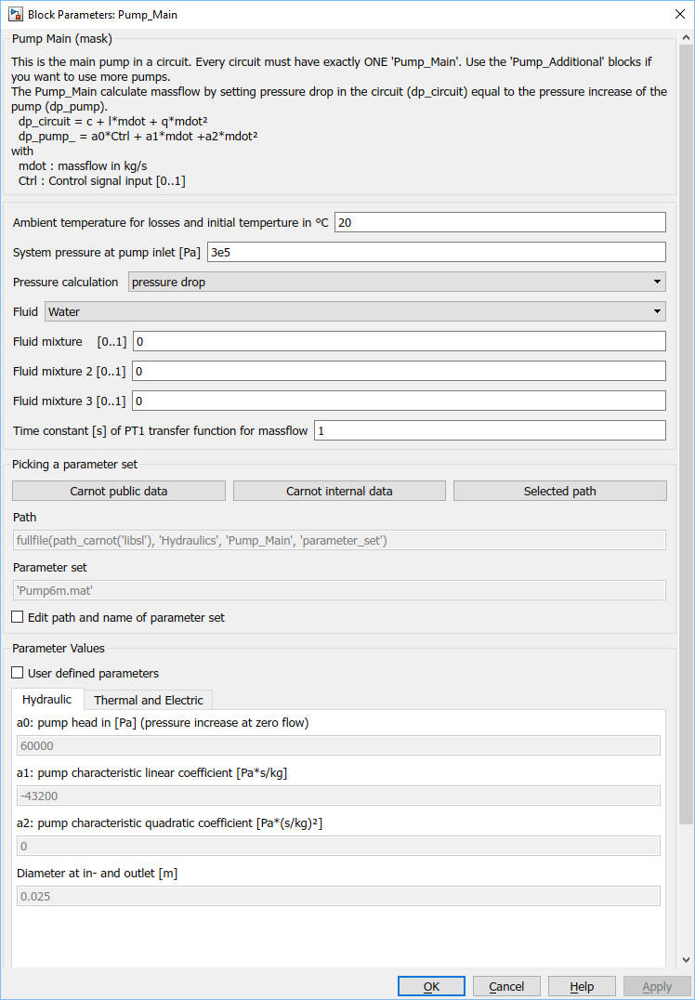
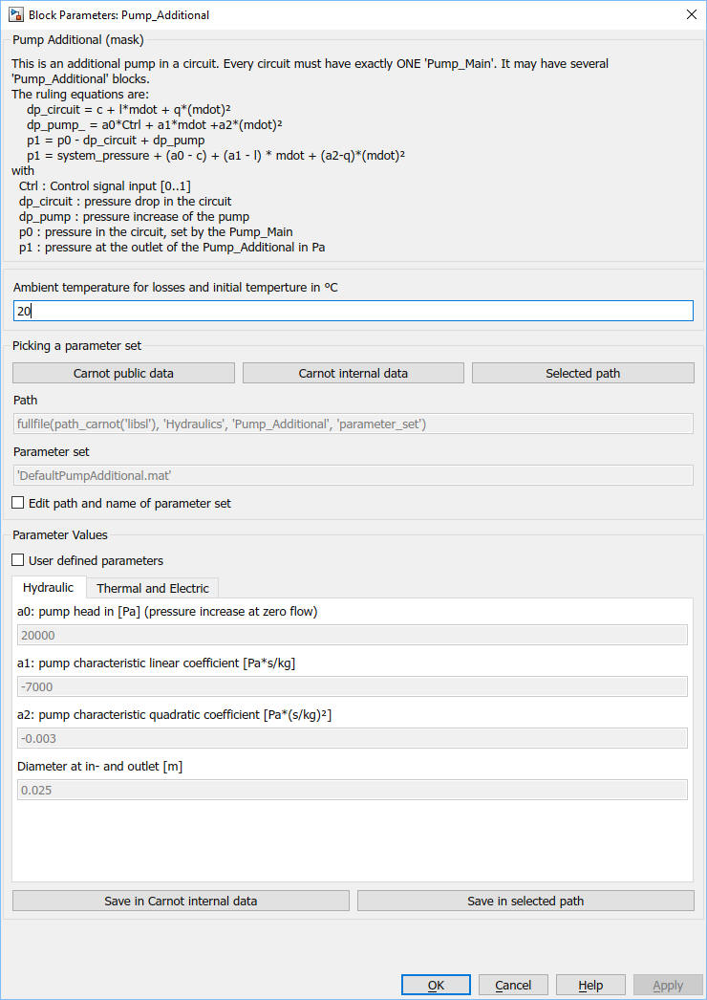
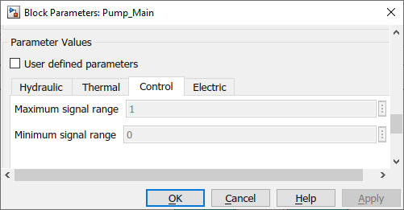

Pump_Main and Pump_Additional
Path: CARNOT/Hydraulics
Purpose:
Pump models which use pump characteristics for the pressure calculation.
Description:
Pump_Main and Pump_Additional are the pump models calculating the massflow
based on the pressure drop equation. Every circuit must have exactly ONE
Pump_Main or Thermosyphon block but it may
have several Pump_Additional blocks in series or in parallel.
See examples 'Example_Hydraulic*.slx in the folder carnot\tutorial\examples
(or use the 'double click to load examples' button in the Carnot library).
The electric power consumption of the pump is given by a quadradic polynom:
Pel = e0 + e1*mdot + e2*mdot2
Control signal range:
Be aware that different pumps react differently on the control signal
input. Typically a 0 to 10 V signal is the input . The translation of the
signal can be:
0 V is interpreted as pump off, 2 V is the minimum speed
and 10 V the maximum speed
0 V is interpreted as minimum speed and 10 V the maximum speed
0 V is interpreted as maximum speed and 10 V is minumum speed
Typically the signal values between minimum and maximum have a linear
interpolation to the min and max speed.
When simulating one specific pump you should refer to the data sheet how the
specific model is reacting.
Define a minimum and a maximum for the operation range
of the pump, e.g. 0.2 as minimum and 1 as maximum. The pump starts operation as
soon as the Ctrl input is equal or above 0.2. If the Ctrl signal is above 1,
the applied control signal is limited to 1. If a minimum of 0 is given, the
pump start operation with any value above 0.
Fluid Type and Mixture:
The fluid type and fluid mixture is defined in the Pump_Main. Any other values
for the fluid type or the mixture which might be defined by the incomming THB
are discarded. The outgoing THB has the fluid type and the fluid mixture
parameters given by the mask of the Pump_Main.
Correlation of pump speed and mass flow in real pumps
For a most real pumps the control signal Ctrl is (more or less) linear to the
rotation speed n.
Physically the rotation speed has a quadratic influence on the pump head since
h1 / h2 = (n1 / n2)2
and a linear influence on the linear coefficient since
V1 / V2 = n1 / n2
Correlation of pump speed and mass flow in Pump_Main
In the pump model this correlation is simplified by a stricly
linear approach: The model calculates massflow by setting pressure drop in
the circuit (dp_circuit) equal to the pressure increase of the pump (dp_pump)
and solving the equation analytically.
dp_circuit = c + l*mdot + q*mdot
dp_pump_ = a0*Ctrl + a1*mdot +a2*mdot²
with
mdot : massflow in kg/s
Ctrl : Control signal input [0..1]
a0 : constant pump coefficient in Pa
a1 : linear pump coefficient in Pa/(kg/s)
a0 : quadratic pump coefficient in Pa/(kg/s)2
c : constant coefficient in Pa (DPConstant in the THB)
l : constant coefficient in Pa*s/kg (DPLinear in the THB)
q : quadratic coefficient in Pa*(s/kg)2
(DPQuadratic in the THB)
Correlation of pump speed and mass flow in Pump_Additional
The model calculates no massflow but the pump characteric coefficients are
substracted from the pressure drop of the circuit.
dp_total = dp_circuit - dp_pump_additional
dp_total = (c - a0*Ctrl) + (l - a1)*mdot + (q - a2)*mdot2
Input:
| THBin | : | Thermo-Hydraulic Bus of the incomming flow |
| Ctrl | : | control signal |
Output:
| THB | : | Thermo-Hydraulic Bus of the leaving flow |
| Pdat | : | Pdat bus containing operation informations of the pump |
Parameters and Dialog Box:



Select a parameter set from the public data, the internal data
or the selected path with the buttons.
Pump_Additional and Pump_Main use the same parameter sets. They
are stored in the Pump_Main\parameter_set folder.
You may specify your own pump specifications by activating the
'user parameters' checkbox. For details see chapter
2.2.1 Choosing parameter sets for configurated models.
Different parameter sets are available. See
data_fit_pump_characteristic for details. Or type
help data_fit_pump_characteristic
on the command line for more information.
Examples:
Open the example explorer from the Matlab command window
ExampleBrowser
or load the examples via the CARNOT library.
Characteristics:
| Direct Feedthrough | : | Yes |
| Sample Time | : | Inherited from driving block |
| Vectorized | : | No |